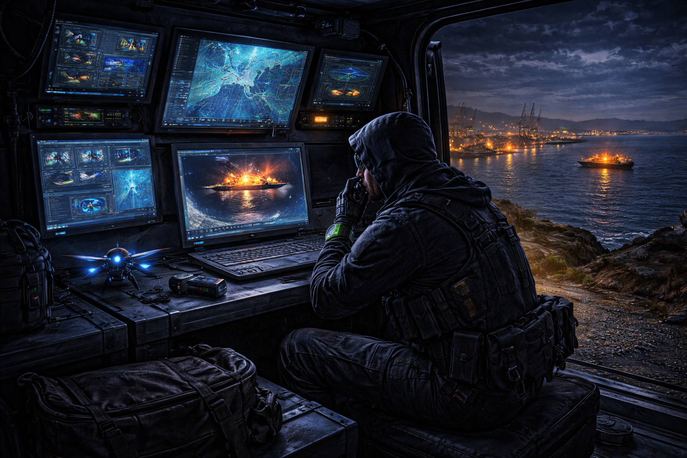

Chapter 1: The Shadow on Nobbys Head
The wind was blowing hard across the harbour.
Down at Nobbys Head, waves crashed against the rocks and the lighthouse beam swept across the dark water like a giant eye. Most of Newcastle was asleep. The streets were quiet. The cafes were closed. Even the seagulls had tucked their heads under their wings.
But not everyone was asleep.
High on the grassy hill beside the lighthouse, a shadow moved.
It was Agent Orion, one of the best spies in Australia.
He wore black boots that made almost no sound at all when he stepped. His jacket had tiny pockets hidden everywhere. Inside them were spy tools that most people had never even seen before.
- A mini grappling hook.
- A listening device the size of a coin.
- Night-vision goggles.
- And his most important gadget of all... a watch that could talk to headquarters.
Orion pressed the side of the watch and whispered.
"Night Agent reporting. I'm at the lighthouse."
The watch crackled quietly.
"Agent Orion," said the voice from headquarters. "We've detected something strange in Newcastle Harbour tonight."
Orion looked out across the water.
Cargo ships sat quietly in the distance. The coal loaders stood tall and silent like giant metal dinosaurs.
"Strange how?" Orion asked.
"A ship that shouldn't be here," the voice said. "It turned off its tracking signal."
Orion's eyes narrowed.
A ship that hides itself is almost never doing something good.
The watch beeped again.
"Our satellites saw it drift close to the harbour about ten minutes ago. Then it vanished."
"Vanished?" Orion said.
"Exactly."
Orion crouched low near the edge of the cliff and pulled out a small black pair of binoculars. But these weren't normal binoculars.
They were thermal spy binoculars. When he looked through them, the dark ocean turned into glowing colours. Cold water appeared deep blue. Warm engines appeared bright orange.
And suddenly...
Orion saw it.
Far out in the harbour. A faint orange shape.
A ship.
But something about it was strange. The ship was moving slowly without any lights on.
Orion whispered into his watch.
"I've found it."

There was a pause. Then headquarters spoke again.
"That ship is carrying something dangerous."
"How dangerous?" Orion asked.
Another pause.
"Dangerous enough that we're sending you in."
Orion smiled just a little.
This was exactly the kind of mission he liked.
He reached into his jacket and pulled out a small silver cylinder.
He pressed a button.
With a whirrr the cylinder unfolded into a tiny spy drone.
It lifted silently into the air and hovered beside him like a mechanical dragonfly.
"Let's take a closer look," Orion said quietly.
The drone zipped out over the dark ocean toward the mysterious ship. For a few seconds everything was silent. Then suddenly...
BEEP. BEEP. BEEP.
The drone's screen flashed red.
Orion frowned. "That's not good."
The watch crackled urgently.
"Agent Orion," headquarters said. "The ship just activated something."
"What kind of something?" Orion asked.
But before they could answer...
The mysterious ship turned.
And pointed straight toward Newcastle Harbour. Orion looked out across the water and whispered one word.
"Uh-oh."
Because now he could see something on the deck. Something big. Something mechanical.
Something that definitely was not supposed to be in Newcastle Harbour. And whatever it was...
It had just started to move.